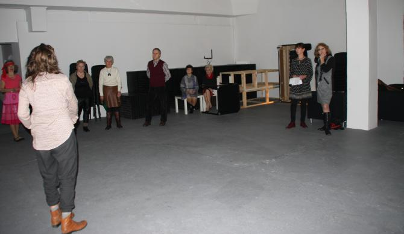
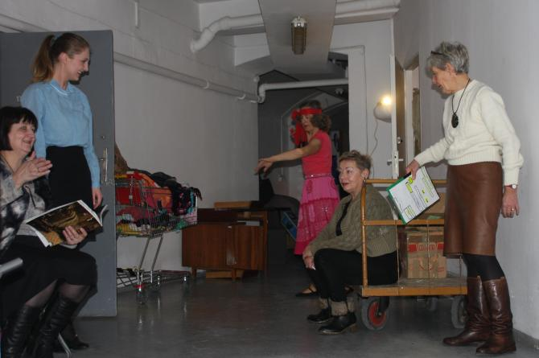
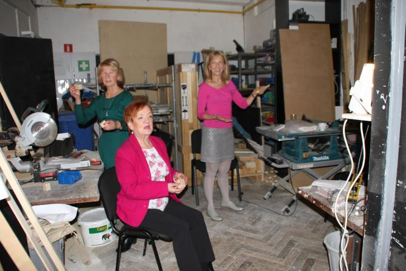
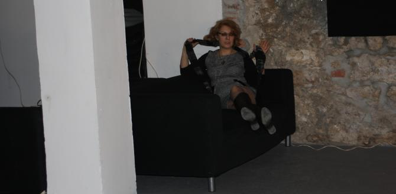
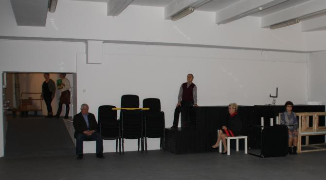
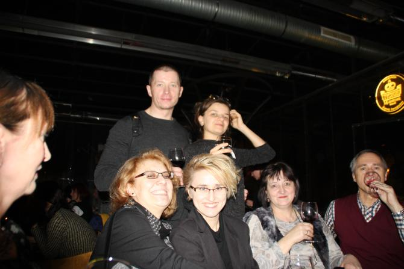

A tymczasem w Cameracie...
.
2015-12-19
Wernisaż „Endospory” oraz premiera pracy przygotowanej specjalnie do Kolekcji Galerii – spektaklu Zorki Wollny „Trąbka do słuchania: kolekcja”.

Dzieła z Kolekcji Bunkra Sztuki są osią performansu rozgrywającego się w przestrzeni wystawy.
 
Niektórzy mieli tak :)

Niesamowite przeżycia dla nas, którzy nigdy nie braliśmy udziału w performansie. Coś niesamowitego!!!

A na zakończenie wspólna, pożegnalna lampka wina.

Kliknij na link u dołu o nazwie bunkier i zobacz galerię zdjęć wykonanych przez fotografa Kubę Pierzchałę.bunkier
Dziękujemy za udostępnienie zdjęć.

© Stowarzyszenie Muzyczne Chór Camerata Wieliczka
Projekt i wykonanie:  Prowadzenie strony: Małgorzata Wysocka-Cebula
Prowadzenie strony: Małgorzata Wysocka-Cebula